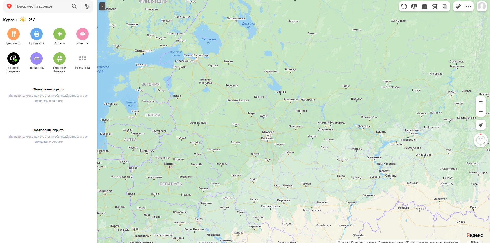
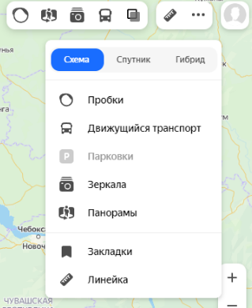
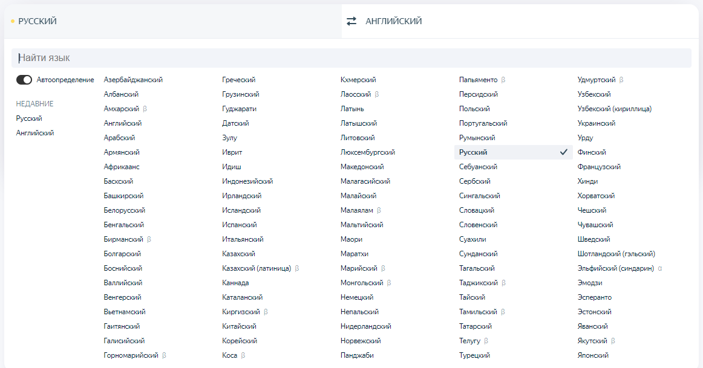
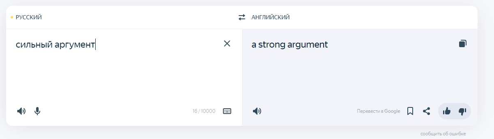

ГЛАВА 8 «Полезные сервисы»
Просмотр видео
Интернет – огромный каталог разнообразного видео: музыкальные клипы, фильмы, телевизионные программы. Вы тоже можете опублико вать видео, которое отсняли на мобильный телефон или видеокамеру.
Свою страничку, где вы смогли бы размещать отснятые видео, можно зарегистрировать в youtube.com. Здесь также можно найти интересные фильмы или передачи. Но следует учитывать, что просмотр многих из них будет платным.С появлением цифрового телевидения становятся популярными мультимедийные платформы, которые позволяют смотреть любые тв-каналы, фильмы и сериалы на любых компьютерных устройствах.
Например, такой сервис есть у Ростелекома – Wink (Винк). Он размещен по адресу: wink.rt.ru. На такие сайты оформляется платная подписка на любой срок. Но при этом есть и бесплатные возможности посмотреть фильмы и сериалы.
Также бесплатная подборка российских фильмов размещена на официальном сайте mosfilm.ru. Зайдите в раздел «Кинотеатр». Можете выбрать фильм из рекомендуемых к просмотру или найти интересующий вас фильм через строку поиска вверху. Введите название фильма.
Нажмите на значок поиска :
Кликнув по ссылке на картинку фильма, вы перейдете на страницу для просмотра. Нажмите на кнопку «Смотреть фильм».
Каждый проигрыватель имеет кнопки управления. Вы можете остановить воспроизведение фильма, отрегулировать громкость, смотреть фильм в размере полного экрана вашего монитора.
Посмотреть интересную программу или ролик так же можно, выбрав их в Яндекс, раздел «Видео» (video.yandex.ru), или на сайте youtube.com.
Как послушать музыку в интернете
В поисковой строке вы можете задать имя исполнителя или название музыкальной композиции. И затем выбрать подходящее из предложенных вариантов и нажать на воспроизведение. Сервис Яндекс Музыка платный. Возможности бесплатного прослушивания музыки ограничены.
Картографические сервисы
В интернете можно найти нужный объект или адрес, магазин и даже проложить маршрут своего путешествия или прогулки. Помогут карты Google, карты Яндекса, спутниковые карты.
Перейдите на сайт одного из картографических сервисов. В поисковой строке необходимо указать адрес интересующего вас объекта. После его обнаружения вы увидите на карте метку.

Если необходимо более детально рассмотреть объект, приблизить его – воспользуйтесь колесиком мыши.
Значки разделов могут находиться вверху справа, а также внизу страницы. С помощью меню в верхнем правом углу карты можно узнать о дорожной ситуации, посмотреть панорамы и фото улиц, иконка «Зеркала» позволяет посмотреть возможные маршруты движения, а пункт «Слои» позволяет переключиться с обычной карты-схемы на карту, сделанную со спутника или на карту-гибрид (фотографии со спутника с наложенной на них картой улиц.

Онлайн-переводчик
Если у вас есть доступ в интернет, то вам больше не нужен привычный словарь, чтобы перевести слово или фразу. В Сети вы можете быстро перевести любой текст на любой язык.
Например, с помощью «Яндекс Переводчика» – translate.yandex.ru.

Принцип работы переводчика прост: в одном окне вы пишите текст, в другом получаете перевод.
Необходимо выбрать, с какого на какой язык вы хотите сделать перевод

Далее в окне слева необходимо написать слово, которое хотите перевести. Программа автоматически подсказывает вам возможные варианты слова, а в окне справа отображается перевод.
Внизу переводчик предлагает вам посмотреть другие значения слова или словосочетания и возможные синонимы.

Перевести можно не только одно слово, но и целую фразу или большой текст.